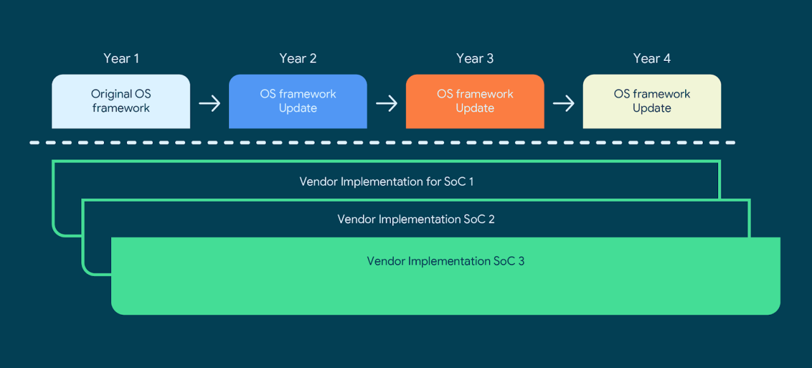

自 Android 11 起，Google 开始实施被称为 Google Requirements Freeze (简称 GRF) 的更新策略，在参考了几个消息来源后，决定总结一下我理解的 GRF 具体是什么东西，又能如何影响 Android 版本更新节奏。
这导致上游 SoC 不得不维护多种 Vendor 版本，同时若新版本 Android 提升了底层功能要求（例如必须支持多摄像头切换 API），一些想要升级通过新版本兼容性测试 (Compatibility Definition Document, CCD) 就会遇到困难，而不得不等待上游 SoC 供应商更新 Vendor 版本。这也是过去中低端机及联发科机型即使拥有 Project Treble，更新 Android 也不积极的首要，无论是上游 SoC 供应商还是 OEM 厂商都不愿意在中低端机上投入过多心力去维护。

而在 Google Requirements Freeze 引入之后，Vendor 版本将被冻结，而 Google 将承诺为各 Vendor 版本提供 N+3 的特性向后兼容保证。例如首次利用 GRF 特性的骁龙 888，Vendor 版本适配当年的 Android 11，那么即便后续升级 Android 版本，Vendor 版本也不再变动，而 Google 将保证 Android 14 能够支持 11 的 Vendor 版本启动，并通过新版本的兼容性测试。这也是 Nothing Phone 作为 2022 年发布并出厂搭载 Android 12 的手机，但其 Vendor 版本仍然基于 Android 11 的原因。其搭载的骁龙 778G+ 同骁龙 888 一样，也是首批支持 GRF 特性的 SoC。

GRF 无疑减轻了上游 SoC 供应商的维护压力，在 GRF 之前，高通承诺为 Vendor 提供 N+2 及 3 年的安全更新支持，而 GRF 至少能为 OEM 厂商提供绕开上游 SoC 供应商的机会，独立提供 N+3 的大版本更新（这也是站在 Android 维护的角度，我不推荐任何骁龙 870 新机的原因，由于反复鞭尸炒冷饭，可预见今年发布的 870 新机即便定价没怎么降，各种维护支持都将显著比同期中高端 SoC 来得更差）
当然引入 GRF 也带来一些问题，由于 Google 必须保证 Android 新版本与先前 Vendor 版本的兼容性，而无法做到涉及硬件支持的特性在相同版本 Android 上体验一致。例如由于涉及 Vendor 改动，即使 Google 在 Android 12 上引入了禁用 2G 的开关，也无法推广到所有 Android 12 的设备上，即使是出厂搭载 Android 12 的设备也是如此。同时由于自发布起 Vendor 版本就被冻结，导致 GRF 机型在后续维护中都将很难获得涉及硬件改动的新特性。
同时 Google 对 GRF 的承诺只到 N+3，若 OEM 厂商想扩展支持到 4 个大版本升级，将必须自行移植最新版本涉及 Vendor 的特性需求，以通过对应版本的兼容性测试。即 GRF 的出现能让各厂商轻易做到 N+3 的支持承诺，却很难更近一步做到 N+4。同时也极度不利于利用旧 SoC 推出新机的厂商保持正常的支持更新节奏。
对于刚刚发布的骁龙 8 Gen 2 来说，自然也支持 GRF 策略。骁龙 8 Gen 2 搭载最新的 Android 13 版本的 Vendor，将享受完整的 Android 13 底层特性支持，并继续提供 N+3 的版本更新承诺。
评论
评论系统使用 Disqus，加载需启用 JavaScript